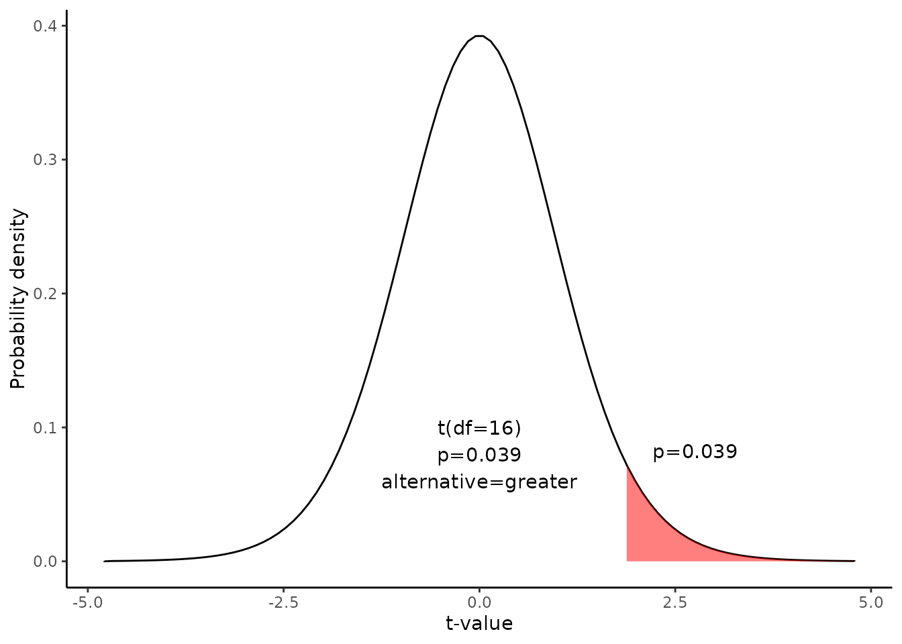
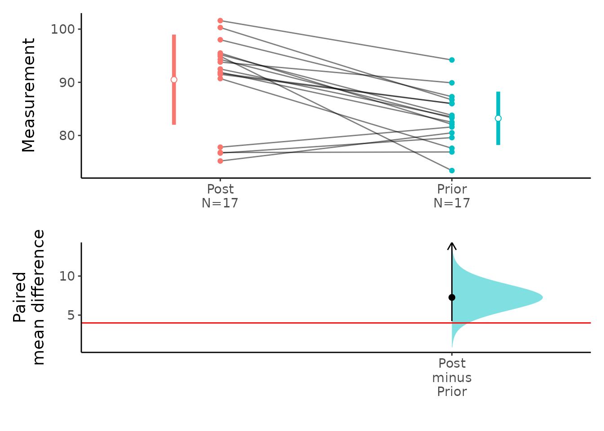

Hypothesis test for the difference between paired means
Source:vignettes/Hypothesis_test_Paired_Mean_Diff.Rmd
Hypothesis_test_Paired_Mean_Diff.RmdThis document is prepared automatically using the following R command.
library(interpretCI) |
Problem
Seventeen patients with anorexia were treated in a hospital. Their weight were checked before and after treatment. Test results are summarized below.
After treatment [1] 95.2 94.3 91.5 91.9 100.3 76.7 76.8 101.6 94.9 75.2 77.8 95.5
[13] 90.7 92.5 93.8 91.7 98.0Before treatment [1] 83.8 83.3 86.0 82.5 86.7 79.6 76.9 94.2 73.4 80.5 81.6 82.1 77.6 83.5 89.9
[16] 86.0 87.3Test the claims that the patients gain at least more than four pounds in weights after treatment. Use an 0.05 level of significance. Assume that the mean differences are approximately normally distributed.
\[\sum(d-\bar{d})^2=819.66\] \[\bar{d}=7.26\]
Conditions
This lesson explains how to conduct a hypothesis test for the difference between paired means. The test procedure, called the matched-pairs t-test, is appropriate when the following conditions are met:
-The sampling method for each sample is simple random sampling.
The test is conducted on paired data. (As a result, the data sets are not independent.)
-
The sampling distribution is approximately normal, which is generally true if any of the following conditions apply.
The population distribution is normal.
The population data are symmetric, unimodal, without outliers, and the sample size is 15 or less.
The population data are slightly skewed, unimodal, without outliers, and the sample size is 16 to 40.
The sample size is greater than 40, without outliers.
This approach consists of four steps: (1) state the hypotheses, (2) formulate an analysis plan, (3) analyze sample data, and (4) interpret results.
State the hypotheses
Every hypothesis test requires the analyst to state a null hypothesis and an alternative hypothesis. The hypotheses are stated in such a way that they are mutually exclusive. That is, if one is true, the other must be false; and vice versa.
The hypotheses concern a new variable d, which is based on the difference between paired values from two data sets.
\[Null\ hypothesis(H_0): \mu_1-\mu_2 <= 4\] \[Alternative\ hypothesis(H_1): \mu_1-\mu_2 > 4\]
Note that these hypotheses constitute a one-tailed test. The null hypothesis will be rejected if the difference between sample means is too big..
Analyze Sample Data
Using sample data, find the standard deviation, standard error, degrees of freedom, test statistic, and the P-value associated with the test statistic.
Standard deviation(\(s_d\))
To solve the problem, we have to calculate standard deviation of the differences(\(s_d\)) computed from differences in English and math score from 17 matched pairs. In the following table, the first 10 data are shown.
Post |
Prior |
d |
(d-mean(d)^2 |
95.2 |
83.8 |
11.4 |
17.1006574 |
94.3 |
83.3 |
11.0 |
13.9524221 |
91.5 |
86.0 |
5.5 |
3.1141869 |
91.9 |
82.5 |
9.4 |
4.5594810 |
100.3 |
86.7 |
13.6 |
40.1359516 |
76.7 |
79.6 |
-2.9 |
103.3212457 |
76.8 |
76.9 |
-0.1 |
54.2388927 |
101.6 |
94.2 |
7.4 |
0.0183045 |
94.9 |
73.4 |
21.5 |
202.6435986 |
75.2 |
80.5 |
-5.3 |
157.8718339 |
\[s_d=\sqrt{\frac{\sum{(d_i-\bar{d})^2}}{n-1}}\]
\[s_d=\sqrt{\frac{819.66}{17-1}}=7.16\]
where \(d_i\) is the difference for pair i, \(\bar{d}\) is the sample mean of the differences, and \(n\) is the number of paired values.
standard error(SE)
Standard error. Compute the standard error (SE) of the sampling distribution of d.
\[SE = s_d \times \sqrt{ ( 1/n )\times [ (N - n) / ( N - 1 ) ] }\]
where \(s_d\) is the standard deviation of the sample difference, \(N\) is the number of matched pairs in the population, and \(n\) is the number of matched pairs in the sample. When the population size is much larger (at least 20 times larger) than the sample size, the standard error can be approximated by:
\[SE = \frac{s_d}{\sqrt{n}}=\frac{7.16}{\sqrt{17}}=1.74\]
Select a confidence level.
In this analysis, the confidence level is defined for us in the problem. We are working with a 95% confidence level. The critical probability(p*) is:
\[p*=1-\alpha=1-0.05\]
Test statistics
The test statistic is a t statistic (t) defined by the following equation.
\[t = [ (\bar{x1} - \bar{x2}) - \mu ] / SE = ( \bar{d}-\mu) / SE\] \[t=[(90.49-83.23)-4]/1.74=1.88\]
where \(\bar{x1}\) is the mean of sample 1, \(\bar{x2}\) is the mean of sample 2, \(\bar{d}\) is the mean difference between paired values in the sample, \(\mu\) is the hypothesized difference between population means, and SE is the standard error.
Since we have a one-tailed test, the P-value is the probability that the t statistic having 16 degrees of freedom is or greater than 1.88.
We use the t Distribution curve to find p value.

4. Interpret results.
Since the P-value (0.039) is less than the significance level (0.05), we can reject the null hypothesis.
We can plot the mean difference.
plot(x,ref="test",side=FALSE)
Result of t.test
t.test(x$data[[1]],x$data[[2]],paired=TRUE,alternative=x$result$alternative,conf.level=1-x$result$alpha,mu=x$result$mu)
Paired t-test
data: x$data[[1]] and x$data[[2]]
t = 1.8807, df = 16, p-value = 0.03917
alternative hypothesis: true difference in means is greater than 4
95 percent confidence interval:
4.233975 Inf
sample estimates:
mean of the differences
7.264706 Result of meanCI()
call: meanCI.data.frame(x = Anorexia, Post, Prior, paired = TRUE, alternative = "greater", mu = 4)
method: Paired t-test
alternative hypothesis:
true paired differences in means is greater than 4
Results
[38;5;246m# A tibble: 1 × 6
[39m
control test DF CI t p
[3m
[38;5;246m<chr>
[39m
[23m
[3m
[38;5;246m<chr>
[39m
[23m
[3m
[38;5;246m<chr>
[39m
[23m
[3m
[38;5;246m<chr>
[39m
[23m
[3m
[38;5;246m<chr>
[39m
[23m
[3m
[38;5;246m<chr>
[39m
[23m
[38;5;250m1
[39m Post Prior 16 7.26 [95CI 4.23; Inf] 1.8807 0.03917Reference
- The contents of this document are modified from StatTrek.com. Berman H.B., “AP Statistics Tutorial”, [online] Available at: https://stattrek.com/hypothesis-test/paired-means.aspx?tutorial=AP URL[Accessed Data: 1/23/2022].